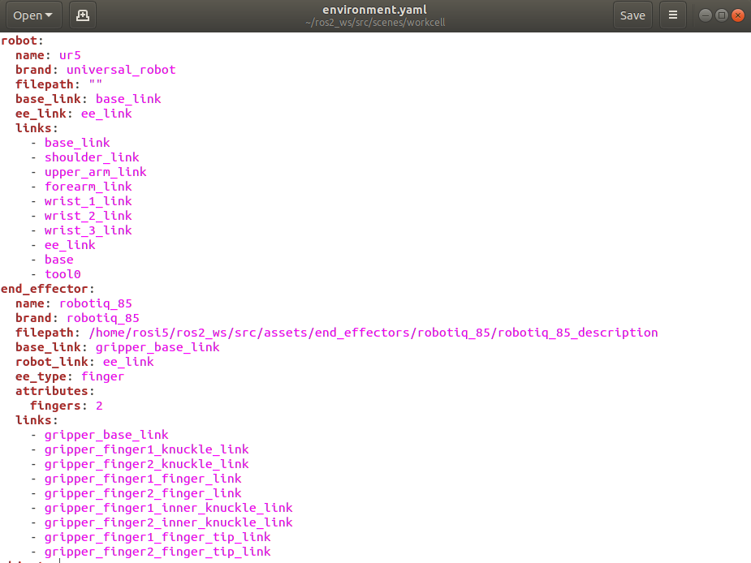
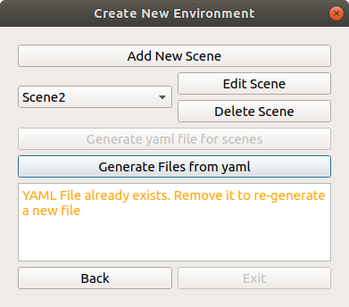

Generate Files and Folders¶
The next step after creating a scene is to generate the relevant files and folders required to create the simulations
Generating yaml files¶

To generate this scene, click on the “Generate yaml for scene” button. An environment.yaml yaml file will be created in the src/scenes/<scene_name> folder
{kind=link}
This file is an easy to read textual representation of the scene. This file is important and required to properly generate the workcell. This is also important for reloading a scene into the GUI for editing. It is possible to do these changes via the YAML file directly rather than the GUI. However, do note that errors may arise if you do not follow the proper YAML format.
{kind=link}
Once succesful, the Generate Files from yaml will be available
Other Files (General)¶
Click the Generate Files from yaml button to generate the actual required components to build the simulation

The following components will be generated through this button:
Environment Object Packages¶
The environment objects that were created in the GUI will now have its URDF Xacros and folders generated in the assets/environment_objects/<object_name>_description folder. This folder will be referenced in the environment urdf
environment.urdf.xacro¶
This file is located in the scenes/<scene_name>/urdf/ folder. This is the main urdf file that combines all the different elements of the workcell and will be the main file that launch files will reference to when launching files.
arm_hand.srdf.xacro¶
This file is located in the scenes/<scene_name>/urdf/ folder. This is the srdf file that combines the robot arm and end effector and contains information such as ignoring link collisions , and will be referenced in launch files.
Other Files (ROS1)¶
<will be edited later>
The launch file for simulation
The move_group.launch file
The planning_context.launch
Other Files (ROS2)¶
demo.launch.py¶
This file is located in the scenes/<scene_name>/launch/ folder. This file serves as a demo launch file that launches an example RVIZ simulation of the workspace. Note that this launch file does not incorporate Moveit2 Components. To find out how to do so, check out Grasp Execution Demo
Once done, you will see the following screen. You can then exit the GUI

Next Steps: Run workcell demo